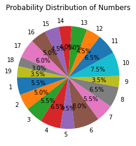

Exercise 6: Implementation (Probability)#
Calculating Probability#
import numpy as np
# Drawing 100 numbers randomly between 1 and 15
drawing = np.random.randint(1, 15, 100)
print(drawing)
print(f"Total Numbers Drawn: {len(drawing)}")
# Calculate the probability of drawing the number 10
count_10 = sum(1 for x in drawing if x == 10)
print(f"count: {count_10}")
probability_10 = count_10 / len(drawing)
print(f"Probability of drawing 10: {probability_10:.2f}")
[10 5 9 14 9 14 14 11 11 9 7 4 6 3 2 9 6 10 7 13 4 13 14 14
13 6 9 11 14 14 10 1 9 8 6 1 8 9 8 5 7 13 1 12 8 14 3 8
9 10 12 6 3 4 6 3 9 1 6 8 11 12 11 3 4 10 5 9 11 9 1 11
9 10 10 10 7 1 6 8 4 6 11 3 4 12 10 1 14 10 2 9 3 11 4 13
12 2 11 11]
Total Numbers Drawn: 100
count: 10
Probability of drawing 10: 0.10
import numpy as np
# Simulating crop disease data (1 = Disease, 0 = No Disease)
disease_data = np.random.choice([0, 1], size=10, p=[0.8, 0.2])
print(disease_data)
# Probability of disease
prob_disease = np.sum(disease_data) / len(disease_data)
print(f"Probability of Crop Disease: {prob_disease:.2%}")
[0 1 0 0 1 1 0 0 0 1]
Probability of Crop Disease: 40.00%
Using Functions for Reusability#
def calculate_probability_range(numbers, targets):
probabilities = {target: numbers.count(target) / len(numbers) for target in targets}
return probabilities
# Example Usage
numbers = list(np.random.randint(1, 10, 50))
target_numbers = [3, 5, 7]
probs = calculate_probability_range(numbers, target_numbers)
print(f"Probabilities: {probs}")
Probabilities: {3: 0.12, 5: 0.14, 7: 0.18}
def calculate_event_probability(event_data, event_value):
return event_data.count(event_value) / len(event_data)
# Example usage
fertilizer_data = [30, 40, 50, 40, 60, 50, 50, 40, 30, 40]
prob_overuse = calculate_event_probability(fertilizer_data, 50)
print(f"Probability of Over-Fertilization (50 kg/ha): {prob_overuse:.2%}")
Probability of Over-Fertilization (50 kg/ha): 30.00%
Advanced Tools: Using Pandas#
import pandas as pd
import random
# Simulate a lottery drawing with a new range (1 to 40)
num_drawings = 150
lottery_drawings = [
random.choices(range(1, 40), k=6) for _ in range(num_drawings)
]
df = pd.DataFrame(lottery_drawings, columns=[f"Ball_{i+1}" for i in range(6)])
print(df)
target_number = 25
count_25 = (df == target_number).sum().sum()
# Calculate the probability of drawing the target number
prob_25 = count_25 / (df.shape[0] * df.shape[1])
print(f"Probability of drawing 25: {prob_25:.3f}")
Ball_1 Ball_2 Ball_3 Ball_4 Ball_5 Ball_6
0 34 38 18 38 20 25
1 36 21 21 31 8 26
2 33 32 30 21 10 3
3 8 13 38 5 10 36
4 21 34 2 12 39 29
.. ... ... ... ... ... ...
145 30 29 27 14 12 4
146 14 19 25 2 39 34
147 20 8 27 12 23 39
148 23 5 3 14 33 21
149 13 29 31 14 34 37
[150 rows x 6 columns]
Probability of drawing 25: 0.018
import pandas as pd
# DataFrame of crop types planted across 20 fields
data = {'Field': range(1, 21), 'Crop': ['Wheat', 'Corn', 'Rice', 'Wheat', 'Corn',
'Rice', 'Corn', 'Wheat', 'Rice', 'Corn',
'Wheat', 'Rice', 'Corn', 'Corn', 'Rice',
'Wheat', 'Corn', 'Rice', 'Wheat', 'Corn']}
df = pd.DataFrame(data)
# Probability of planting 'Corn'
prob_corn = len(df[df['Crop'] == 'Wheat']) / len(df)
print(f"Probability of Planting Corn: {prob_corn:.2%}")
Probability of Planting Corn: 30.00%
Visualization of Probabilities#
import numpy as np
import matplotlib.pyplot as plt
# Simulate a dataset
numbers = np.random.randint(1, 20, 200)
counts = {num: list(numbers).count(num) for num in set(numbers)}
# Plot a pie chart
plt.pie(
counts.values(),
labels=counts.keys(),
autopct="%1.1f%%",
startangle=180
)
plt.title("Probability Distribution of Numbers")
plt.show()

import matplotlib.pyplot as plt
from collections import Counter
# Simulated resource usage data
resources = ['Bioethanol', 'Biodiesel', 'Biogas', 'Bioethanol', 'Biogas',
'Biodiesel', 'Biodiesel', 'Biogas', 'Bioethanol', 'Biogas']
# Count occurrences
resource_counts = Counter(resources)
total = sum(resource_counts.values())
probabilities = {res: count / total for res, count in resource_counts.items()}
plt.bar(probabilities.keys(), probabilities.values(), color='green')
plt.title("Probability of Using Each Renewable Resource")
plt.ylabel("Probability")
plt.xlabel("Resource")
plt.show()

Simulating Real-Life Scenarios#
import numpy as np
import matplotlib.pyplot as plt
outcomes = ['Heads', 'Tails']
tosses = np.random.choice(outcomes, size=200)
# Probability of Heads using a dictionary
toss_counts = {outcome: np.sum(tosses == outcome) for outcome in outcomes}
print(f"Toss Counts: {toss_counts}")
prob_heads = toss_counts['Heads'] / len(tosses)
print(f"Probability of Heads: {prob_heads:.2f}")
probabilities = []
for i in range(1, 1000):
tosses = np.random.choice(outcomes, size=i)
probabilities.append(np.sum(tosses == 'Heads') / i)
plt.plot(probabilities, label="Probability of Heads")
plt.axhline(y=0.5, color='r', linestyle='--', label="Expected Probability")
plt.title("Convergence of Heads Probability")
plt.xlabel("Number of Tosses")
plt.ylabel("Probability")
plt.legend()
plt.show()
Toss Counts: {'Heads': 112, 'Tails': 88}
Probability of Heads: 0.56
import numpy as np
weather_conditions = ['Sunny', 'Rainy', 'Cloudy']
weather_probs = [0.5, 0.3, 0.2]
infestations = []
for _ in range(50): # 50 days
weather = np.random.choice(weather_conditions, p=weather_probs)
if weather == 'Sunny':
infestations.append(np.random.choice([0, 1], p=[0.9, 0.1]))
elif weather == 'Rainy':
infestations.append(np.random.choice([0, 1], p=[0.6, 0.4]))
else:
infestations.append(np.random.choice([0, 1], p=[0.8, 0.2]))
# Calculate overall infestation probability
prob_infestation = sum(infestations) / len(infestations)
print(f"Overall Probability of Pest Infestation: {prob_infestation:.2%}")
Overall Probability of Pest Infestation: 24.00%